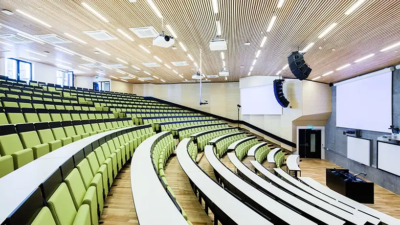
Мероприятия
Оборудование для выступлений
Оказываем весь спектр услуг по оборудованию помещений для выступлений спикеров и артистов от проектирования до реализации проекта под ключ.
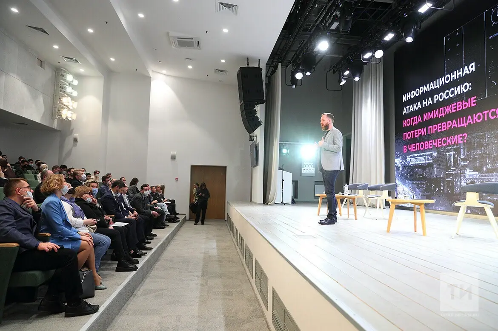
Примеры комплектаций
Цены «от» и условия относятся к указанному составу.
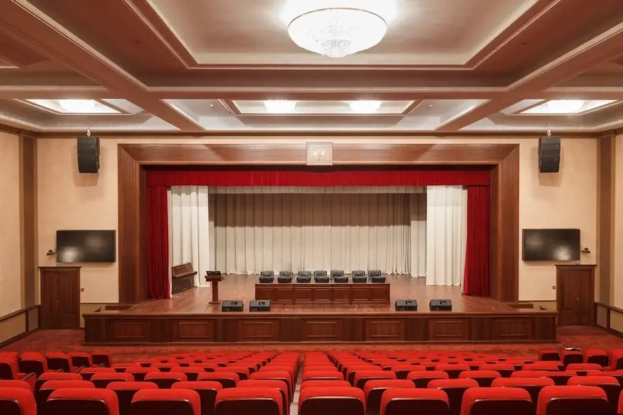
Актовый зал
от 1 000 000 руб. с НДС 22%Обсудить этот формат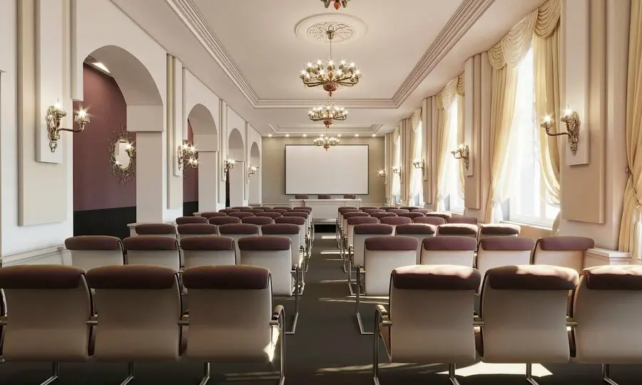
Конференц-зал
от 1 500 000 руб. с НДС 22%Обсудить этот формат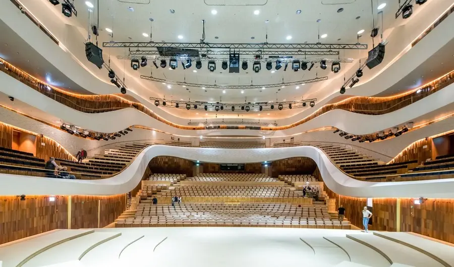
Концертный зал
от 2 500 000 руб. с НДС 22%Обсудить этот формат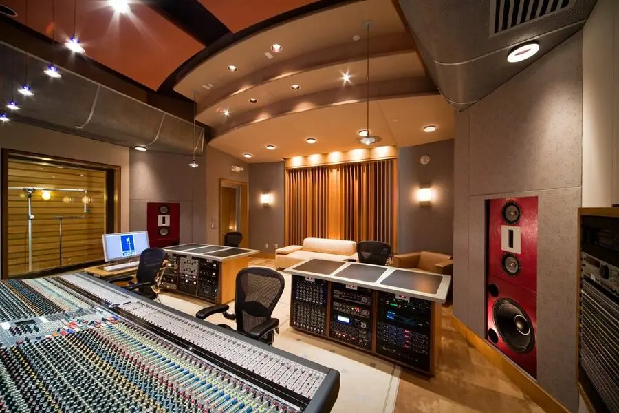
Музыкальная студия
от 3 000 000 руб. с НДС 22%Обсудить этот форматСостав системы
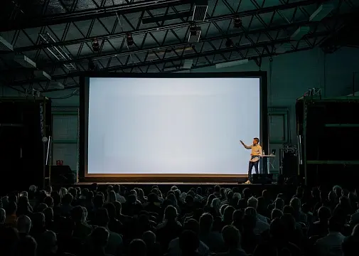
Проекционное оборудование
Проекторы и проекционные экраны используются не только в конференц-залах для демонстрации презентации и инфографики в ходе выступлений участников. Специальные проекторы также задействованы в концертной деятельности и в телевизионных студиях, например, для создания необычных динамических декораций.
Выбрать формат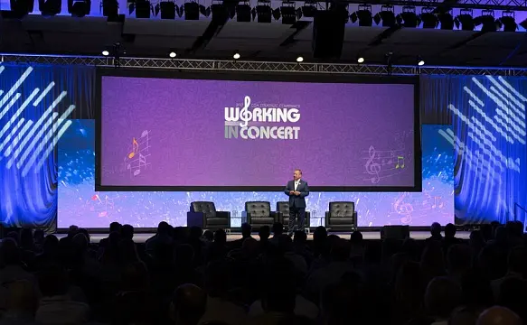
Системы отображения
Различные устройства отображения: от светодиодных экранов до видеостен и дополнительных ЖК-панелей обеспечивают формирование яркого и четкого изображения в ходе выступления, будь то деловая конференция, концерт или развлекательное мероприятие в клубе. Без средств визуализации сегодня не обходится ни одна сфера.
Выбрать формат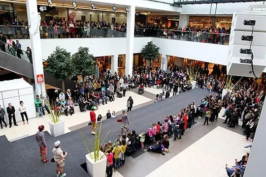
Системы озвучивания
Акустические системы служат для воспроизведения музыки, голоса певцов, а также различного аудиоконтента: от речи участников во время конференций до голоса артиста при выступлении. Типовыми элементами озвучивания являются активные и пассивные колонки и громкоговорители подвесного, встроенного или напольного типов.
Выбрать форматМикрофонные системы
Как концертные мероприятия, так и деловые подразумевают выступления людей перед микрофонной стойкой. Певцы и музыканты особенно ценят высокие акустические характеристики и хорошую помехозащищенность концертных микрофонов. Однако и проведение пресс-конференций требует не меньшего внимания к качеству этого вида оборудования.
Выбрать формат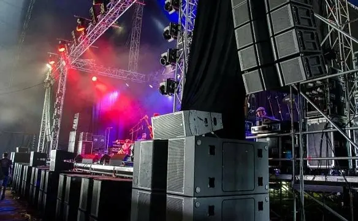
Концертная акустика
Отдельный класс акустических устройств предназначен для воспроизведения музыки. Это и концертные громкоговорители, сабвуферы, колонны мощных динамиков, а также сценические мониторы, позволяющие выступающим артистам и коллективам слышать свой голос и инструменты.
Выбрать формат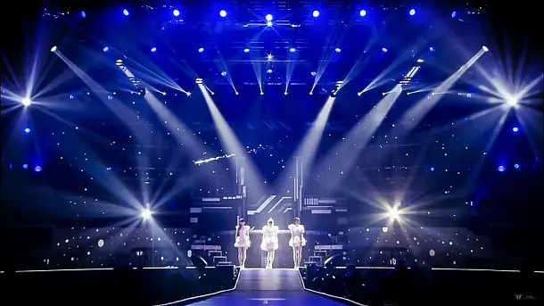
Световое оборудование
Сценические и концертные площадки сложно представить без профессионального освещения. В указанную категорию входят прожекторы, софиты, стробоскопы и другое оборудование, задача которого – подчеркнуть декорации, выделить артистов, осветить зал или создать праздничную атмосферу с помощью световых эффектов.
Выбрать формат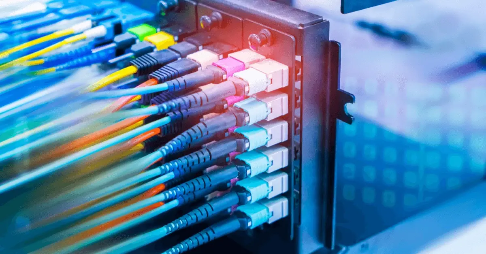
Коммутационное оборудование
Под коммутационным оборудованием понимают усилители сигнала, распределители, матричные коммутаторы, микшеры, процессоры, контроллеры, преобразователи и многие другие цифровые и аналоговые приборы, задачей которых является сопряжение разных видов сигнала между собой, их обработку и обеспечение качественной передачи сигналов на расстояние.
Выбрать формат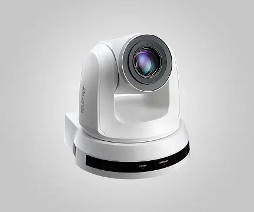
Видеокамеры
Часто лекции и иные мероприятия проводятся в дистанционной форме, удаленно. В этом случае список необходимых устройств пополняется видеокамерами. Именно с их помощью можно организовать удаленные переговоры бизнес партнеров, организовать трансляцию научной конференции или концертного выступления в интернет.
Выбрать формат
Видеоконференцсвязь
Деловые встречи, переговоры и конференции сегодня все чаще проводятся в онлайн-формате. Программные и аппаратные видеоконференц-решения позволяют обсуждать важные вопросы и обмениваться документами в режиме реального времени между докладчиками максимально просто.
Выбрать формат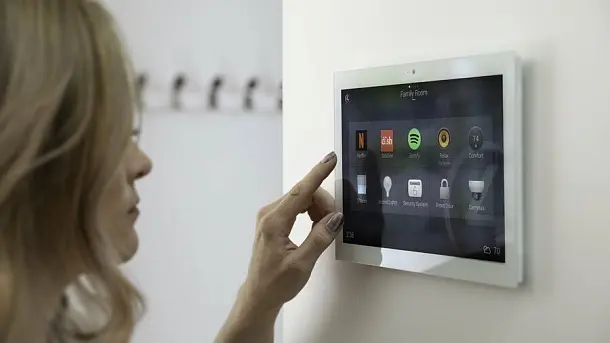
Системы управления оборудованием
Средства управления превращают разрозненный набор аппаратуры и интерфейсов в цельную взаимосвязанную экосистему. Единый пульт управления позволяет запускать воспроизведение контента, управлять работой осветительного оборудования, накладывать эффекты и многое другое. Чаще всего это компьютер или планшет.
Выбрать формат
Системы резервирования помещений
Помещения конференц-залов и переговорных комнат в бизнес-центрах и гостиничных комплексах часто сдаются в аренду для проведения конференций и выступлений. Чтобы сделать резервирование помещений проще, используются электронные программно-аппаратные средства для бронирования. Несколько нажатий – и помещение зарезервировано.
Выбрать формат
Беспроводные системы
Устройства для беспроводной связи позволяют исключить фактор проводов и адаптеров и сделать обмен информацией более удобным и простым. Так, докладчик может выводить на экран слайды, а участники – легко подключать собственные устройства через сеть Wi-Fi для того, чтобы делиться документами и оставлять комментарии.
Выбрать форматАнтрактно-раздвижной занавес
Механизированные шторы затемнения – это важные аксессуары деловых помещений и актовых залов для создания светового комфорта. Действительно: если для мероприятия требуется показать презентацию на экране, то дневной свет будет мешать, даже если речь идет о проекторе большой мощности. Нажатие кнопки на пульте обеспечит комфортный просмотр.
Выбрать формат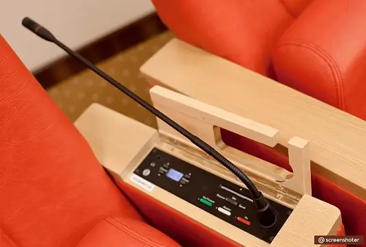
Специализированная мебель
Комплекты специализированной мебели требуются во многих типах помещений: от кинотеатров (для мест в зрительном зале) до переговорных комнат (столы и стулья). А во время выступлений имеет смысл предоставить выступающему кафедру, пюпитр для документов и стойки для POS-продукции.
Выбрать форматРеализованные проекты
Бюджеты и сроки взяты из карточек конкретных объектов.

Российский университет медицины Минздрава России
Москва · 60 рабочих дней

Научно-исследовательский институт ВНИГНИ
Москва · 20 рабочих дней

Федеральная служба по надзору в сфере защиты прав потребителей
Москва · 20 рабочих дней

Группа компаний Мультисистема
Москва · 30 рабочих дней

Ветеринарная клиника Vetcity Cliniс
Москва · 5 рабочих дней

Россети Северный Кавказ Дагэнерго
Дагестан · 30 рабочих дней

Подольский кабельный завод
Подольск · 30 рабочих дней
Вопросы и ответы
Какая минимальная сумма проекта?
Минимальная сумма проекта, за который мы берёмся — 500 000 ₽ Максимальная сумма проекта, который мы реализовали на данный момент — 150 000 000 ₽
Какая гарантия на работы и на оборудование?
На оборудование определяется производителя и осуществляется на основании гарантийных талонов и составляет - до 5 лет. На монтажные работы гарантия составляет - 1 год.
Зачем нам нужна информация о вашей компании?
Информация о вашей компании необходима для регистрации проектов у вендоров и получения специальных скидок. Профессиональные вендоры продают оборудование только сертифицированным компаниям, и для этого требуется предоставить данные о вашей организации.
С чего начнём?
Выберите задачу для помещения. Она появится в брифе вместе с названием решения.